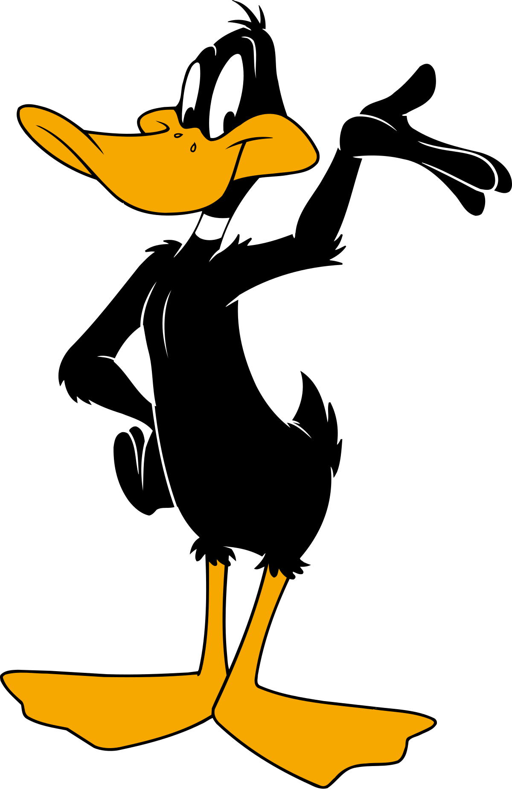
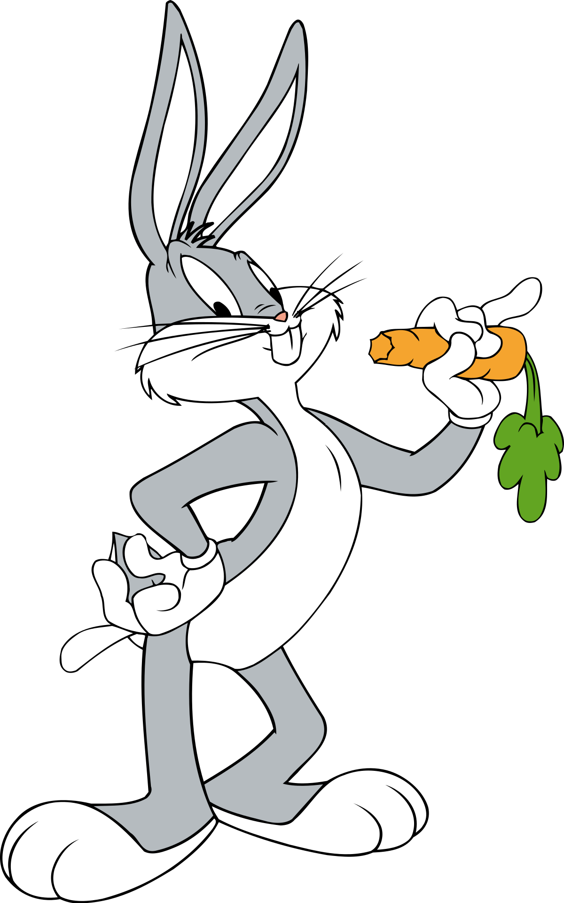

2020 Cartoonsville General Election
Postion
Rose Party Candidate
Iris Party Candidate
President

Daffy Dumas Duck

Bugs Bunny
Vice President
Wile E. Coyote
Road Runner
Representative
Elmer Fudd
Porky Pig
Mayor
Yosemite Sam
Sylvester James Pussycat, Sr
Submit
Reset